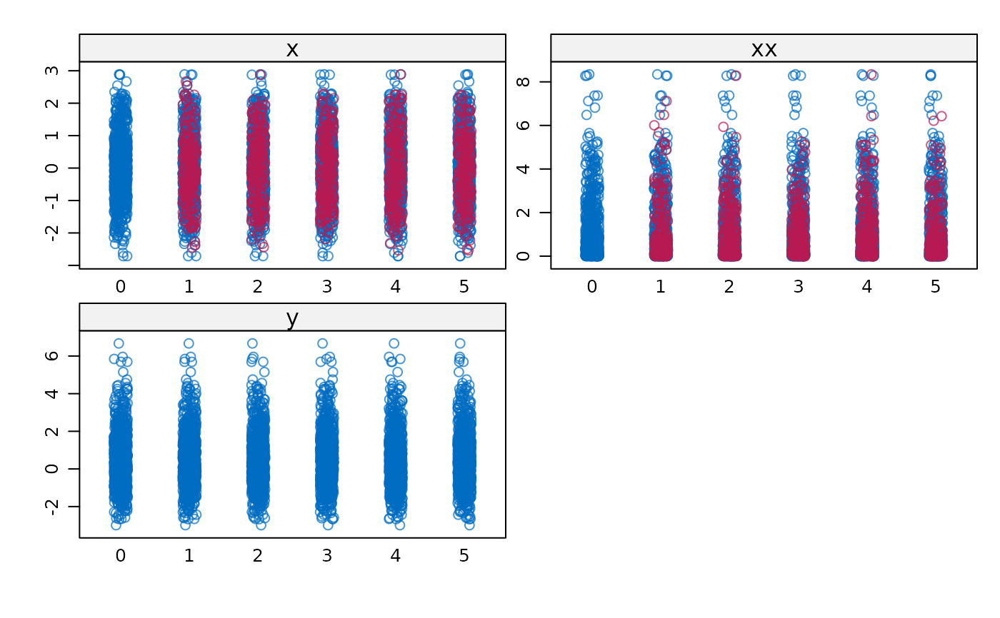
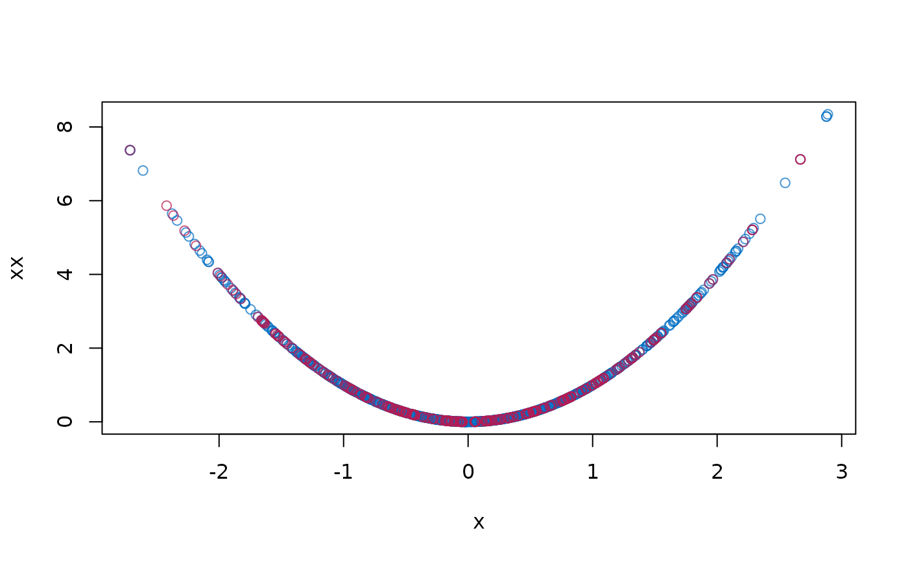

Imputes incomplete variable that appears as both main effect and quadratic effect in the complete-data model.
Arguments
- y
Vector to be imputed
- ry
Logical vector of length
length(y)indicating the the subsety[ry]of elements inyto which the imputation model is fitted. Therygenerally distinguishes the observed (TRUE) and missing values (FALSE) iny.- x
Numeric design matrix with
length(y)rows with predictors fory. Matrixxmay have no missing values.- wy
Logical vector of length
length(y). ATRUEvalue indicates locations inyfor which imputations are created.- quad.outcome
The name of the outcome in the quadratic analysis as a character string. For example, if the substantive model of interest is
y ~ x + xx, then"y"would be thequad.outcome- ...
Other named arguments.
Details
This function implements the "polynomial combination" method. First, the polynomial combination \(Z = Y \beta_1 + Y^2 \beta_2\) is formed. \(Z\) is imputed by predictive mean matching, followed by a decomposition of the imputed data \(Z\) into components \(Y\) and \(Y^2\). See Van Buuren (2012, pp. 139-141) and Vink et al (2012) for more details. The method ensures that 1) the imputed data for \(Y\) and \(Y^2\) are mutually consistent, and 2) that provides unbiased estimates of the regression weights in a complete-data linear regression that use both \(Y\) and \(Y^2\).
Note
There are two situations to consider. If only the linear term Y
is present in the data, calculate the quadratic term YY after
imputation. If both the linear term Y and the the quadratic term
YY are variables in the data, then first impute Y by calling
mice.impute.quadratic() on Y, and then impute YY by
passive imputation as meth["YY"] <- "~I(Y^2)". See example section
for details. Generally, we would like YY to be present in the data if
we need to preserve quadratic relations between YY and any third
variables in the multivariate incomplete data that we might wish to impute.
See also
mice.impute.pmm
Van Buuren, S. (2018).
Flexible Imputation of Missing Data. Second Edition.
Chapman & Hall/CRC. Boca Raton, FL.
Vink, G., van Buuren, S. (2013). Multiple Imputation of Squared Terms. Sociological Methods & Research, 42:598-607.
Other univariate imputation functions:
mice.impute.cart(),
mice.impute.lasso.logreg(),
mice.impute.lasso.norm(),
mice.impute.lasso.select.logreg(),
mice.impute.lasso.select.norm(),
mice.impute.lda(),
mice.impute.logreg.boot(),
mice.impute.logreg(),
mice.impute.mean(),
mice.impute.midastouch(),
mice.impute.mnar.logreg(),
mice.impute.mpmm(),
mice.impute.norm.boot(),
mice.impute.norm.nob(),
mice.impute.norm.predict(),
mice.impute.norm(),
mice.impute.pmm(),
mice.impute.polr(),
mice.impute.polyreg(),
mice.impute.rf(),
mice.impute.ri()
Examples
# Create Data
B1 <- .5
B2 <- .5
X <- rnorm(1000)
XX <- X^2
e <- rnorm(1000, 0, 1)
Y <- B1 * X + B2 * XX + e
dat <- data.frame(x = X, xx = XX, y = Y)
# Impose 25 percent MCAR Missingness
dat[0 == rbinom(1000, 1, 1 - .25), 1:2] <- NA
# Prepare data for imputation
ini <- mice(dat, maxit = 0)
meth <- c("quadratic", "~I(x^2)", "")
pred <- ini$pred
pred[, "xx"] <- 0
# Impute data
imp <- mice(dat, meth = meth, pred = pred, quad.outcome = "y")
#>
#> iter imp variable
#> 1 1 x xx
#> 1 2 x xx
#> 1 3 x xx
#> 1 4 x xx
#> 1 5 x xx
#> 2 1 x xx
#> 2 2 x xx
#> 2 3 x xx
#> 2 4 x xx
#> 2 5 x xx
#> 3 1 x xx
#> 3 2 x xx
#> 3 3 x xx
#> 3 4 x xx
#> 3 5 x xx
#> 4 1 x xx
#> 4 2 x xx
#> 4 3 x xx
#> 4 4 x xx
#> 4 5 x xx
#> 5 1 x xx
#> 5 2 x xx
#> 5 3 x xx
#> 5 4 x xx
#> 5 5 x xx
# Pool results
pool(with(imp, lm(y ~ x + xx)))
#> Class: mipo m = 5
#> term m estimate ubar b t dfcom
#> 1 (Intercept) 5 0.09523804 0.0014726259 0.0001460981 0.0016479437 997
#> 2 x 5 0.47686983 0.0009562814 0.0003835250 0.0014165114 997
#> 3 xx 5 0.49101019 0.0004636236 0.0001422658 0.0006343426 997
#> df riv lambda fmi
#> 1 252.89879 0.1190511 0.1063858 0.1133699
#> 2 35.86887 0.4812705 0.3249038 0.3596410
#> 3 51.32816 0.3682275 0.2691274 0.2960333
# Plot results
stripplot(imp)

plot(dat$x, dat$xx, col = mdc(1), xlab = "x", ylab = "xx")
cmp <- complete(imp)
points(cmp$x[is.na(dat$x)], cmp$xx[is.na(dat$x)], col = mdc(2))
